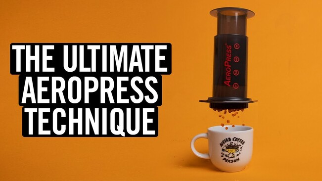

AeroPress Recipe

James Hoffman's AeroPress Recipe
James presents us with a simple, and tasty recipe.
Ingredients
Steps
- Set brewer in standard position on a server.
Don't rinse or preheat the brewer
- Start a timer, add 200mL water, aiming to
wet all the coffee during pouring
- Then immediately place the plunger on top of the brewer,
about 1cm in. This creates a vacuum to stop the coffee from
dripping through
- Wait 2 minutes
- Holding the brewer and the plunger, gently swirl the brewer
- Wait 30 seconds
- Press gently all the way, it takes about 30 seconds